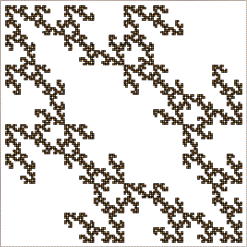

| (a) For the 1-step memory picture on the left, on the right we see the 2-step memory picture that
reproduces the 1-step memory picture. We have seen that copying the
1-step memory table into each row of the 2-step memory table gives the same picture. |
 |
 |
|
|
|
|
| (b) Below we see that by copying the 1-step memory table into each face of the 2-step memory table,
we obtain four copies of the 1-step memory picture, one
for each of the length-1 address subsquares. |
|
| (c) There is one other obvious way to copy the 1-step memory table into the
2-step memory table: pasting into the columns. |
|
| Note that instead of the three lines of slope -2 we see in (b), here we have four lines
of slope -4. The explanation of the presence of these lines is similar to that of Exercise 1(c). |